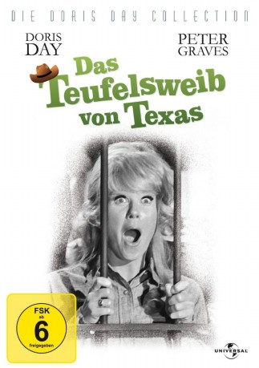
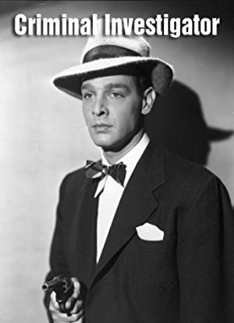
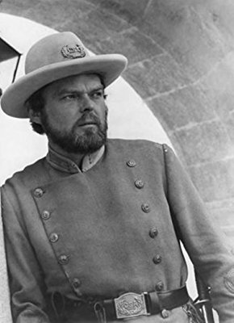

#3408 Das Teufelsweib von Texas
Alternativ: The Ballad of Josie
 
 IMDB-Wertung: 5.8 / 10
IMDB-Wertung: 5.8 / 10  Metascore: 0
Metascore: 0 
Mit bescheidenem Erfolg bewirtschaftet eine Frau, die verdächtigt wird, am Tod ihres Mannes nicht ganz unschuldig zu sein, eine Farm in Wyoming. Als zwischen ihr und einem mächtigen Rinderbaron ein Weidekrieg ausbricht, stellt sich zunächst nur ein Mann auf ihre Seite; doch als die Frauenbewegung in Washington von ihrem Schicksal erfährt, ändert sich die Lage.
Jahr: 1967
Dauer: 97 Minuten
FSK: 6
Land: USA Studio: Universal PicturesTonspuren:
Untertitel:
Auflösung: 720p (1280x720) Größe: 3061 MB
Genre: Komödie, Western
Regisseur: Andrew V. McLaglen
Drehbuch: Harold Swanton
Soundtrack: Frank De Vol
Darsteller:
 Doris Day als Josie Minick
Doris Day als Josie Minick Peter Graves als Jason Meredith
Peter Graves als Jason Meredith George Kennedy als Arch Ogden
George Kennedy als Arch Ogden Andy Devine als Judge Tatum
Andy Devine als Judge Tatum- William Talman als District Attorney Charlie Lord
- David Hartman als Sheriff Fonse Pruitt
 Don Stroud als Bratsch
Don Stroud als Bratsch Paul Fix als Alpheus Minick
Paul Fix als Alpheus Minick Harry Carey Jr. als Mooney
Harry Carey Jr. als Mooney John Fiedler als Simpson
John Fiedler als Simpson-  Robert Lowery als Whit Minick
- Bill Quinn als Bobbitt , uncredited
- Guy Raymond als Doc
- Audrey Christie als Annabelle Pettijohn
- Karen Jensen als Deborah Wilkes
 Elisabeth Fraser als Widow Renfrew
Elisabeth Fraser als Widow Renfrew- Linda Meiklejohn als Jenny McCardle
- Shirley O'Hara als Elizabeth
 Timothy Scott als Klugg
Timothy Scott als Klugg- Teddy Quinn als Luther Minick
- Jimmie Booth als Court Clerk , uncredited
 George DeNormand als Territorial Delegate , uncredited
George DeNormand als Territorial Delegate , uncredited-  Edward Faulkner als Juror-Livery Man , uncredited
- George Ives als Freemont , uncredited
- Mike Lally als Juror , uncredited
- Jack Lilley als Cowhand , uncredited
- Alexander Lockwood als Parson , uncredited
- Rod McGaughy als Townsman , uncredited
- J. Edward McKinley als Stokey , uncredited
- Ollie O'Toole als 1st Juror , uncredited
 James Seay als Territorial Politician , uncredited
James Seay als Territorial Politician , uncredited- Harry Swoger als Nick , uncredited
- Jonathan Wynne als Houseboy , uncredited
Datei: X:\HD-Western-1960-1979\Teufelsweib von Texas, Das (1967, FSK6, 1280x720).mkv seit 01.04.2016
Festplatte: HD Eastern+Western
 Es gibt insgesamt 110 Filme in der Gruppe 'HD-Western-1960-1979'
Es gibt insgesamt 110 Filme in der Gruppe 'HD-Western-1960-1979'